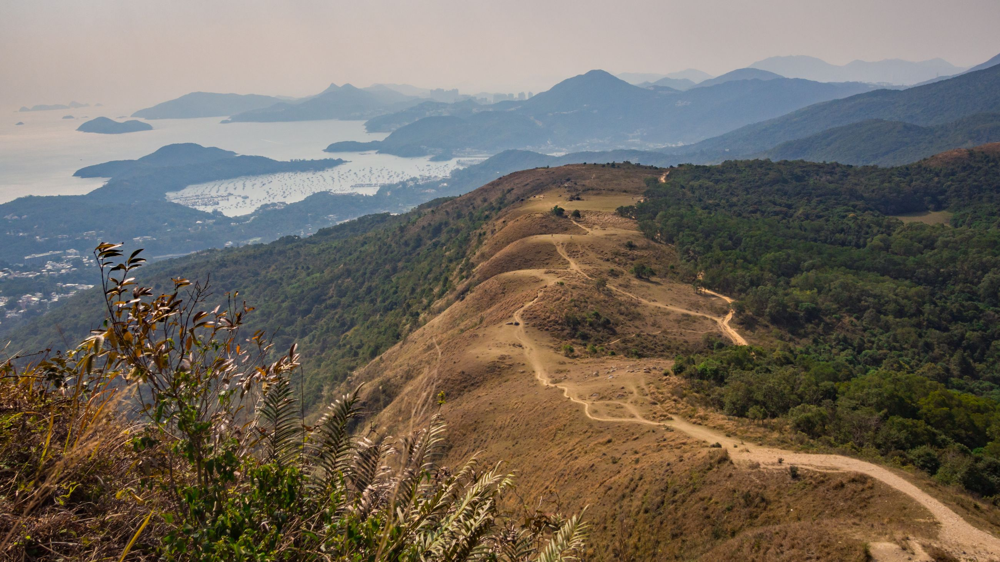
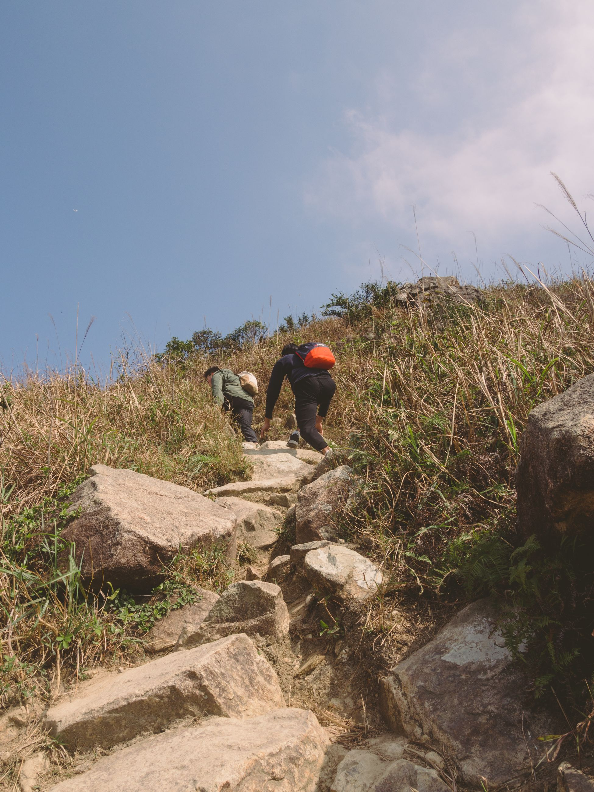
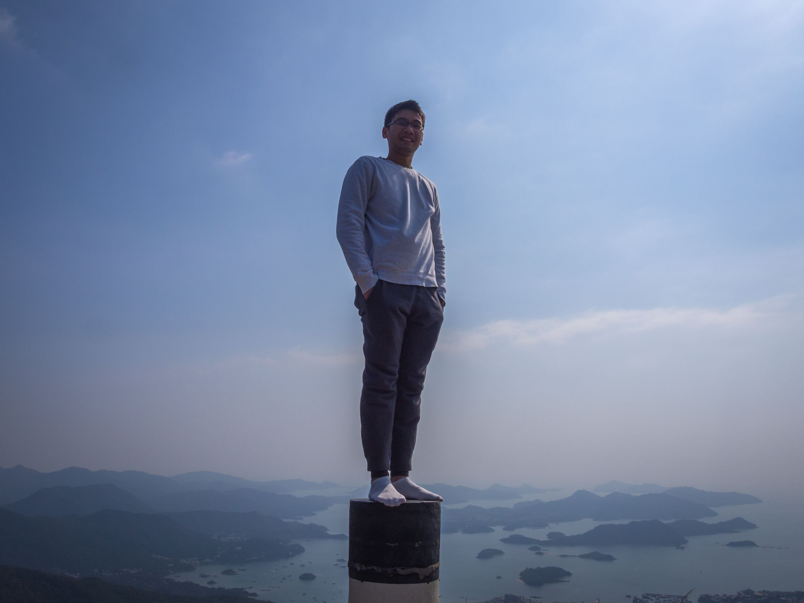

Hong Kong has enough mountains and sea for decent hiking trails. I make it to the peak and look down into the ocean inlet, and take a deep breath. Everything seems small and inconsequential up here. During the winter, Hong Kongers hike. Here's the Ma On Shan trail. Included was an 50-degree ascent to Pyramid Hill on hands/feet to take pictures at this odd structure. Instagram Generation.
  